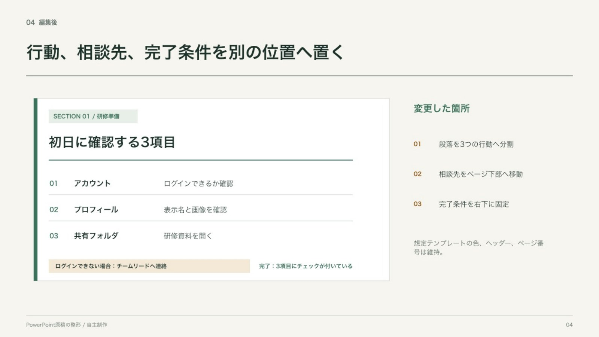
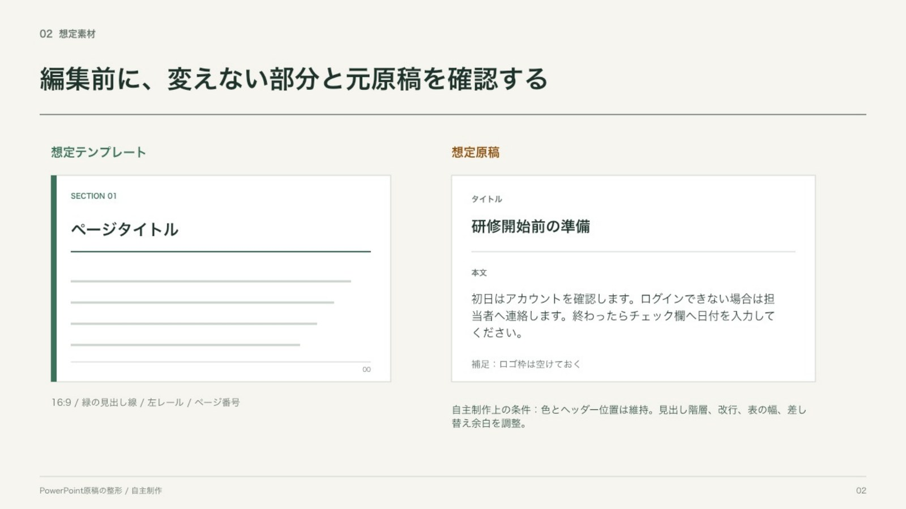
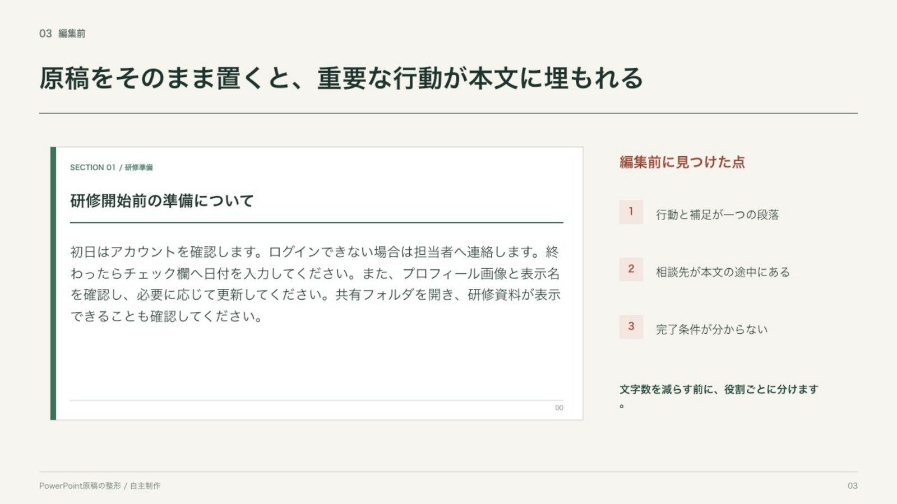
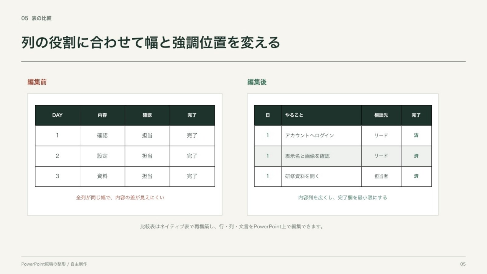
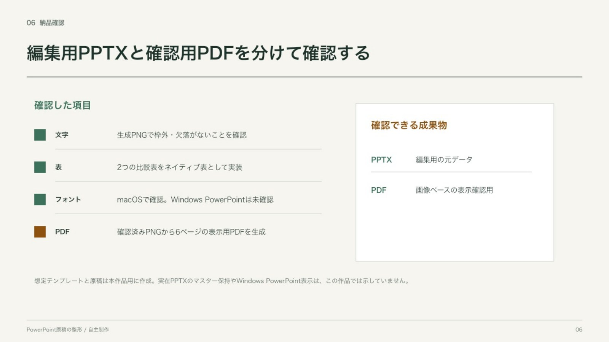

自主制作 01 / PowerPoint / 6ページ
原稿を、読める順番へ整える
想定テンプレートと原稿を自作し、内容を置いただけの状態から、行動・相談先・完了条件を追える状態までを比較しました。実在PPTXのマスター編集例ではありません。

課題と判断
装飾より先に、何を変えないかを決めました。
原稿を短くするだけでは、依頼者が使っているテンプレートの規則や、文章の意味を失うことがあります。このケースでは、色、見出し線、ヘッダー位置、ページ番号を固定し、内容の役割だけを組み替えました。
- 01テンプレート規則を確認
変えない色、罫線、ヘッダー、ページ番号を先に固定しました。
- 02一段落を役割で分ける
行動、相談先、完了条件を別の位置へ移し、読む順番を作りました。
- 03表を作り直す
列の役割に合わせて幅を変え、画像ではなくPowerPointの表として実装しました。
- 04編集用と確認用を分ける
編集にはPPTX、表示確認には画像ベースPDFを用意しました。
入力から完成まで
BeforeとAfterは同じ想定原稿を使っています。改善率や実案件の成果を示す比較ではありません。




証拠と境界
このケースで確認できること
確認できる
- 長文原稿の役割分けと見出し整理
- 既定の色・ヘッダーを残す編集判断
- 編集可能なPowerPoint表の実装
- PPTXと確認用PDFの引継ぎ
この作品では示していない
- 実在テンプレートのマスター保持
- Windows版PowerPointでの表示
- 企業ロゴや外部画像の選定
- 実案件の成果、納期、改善率